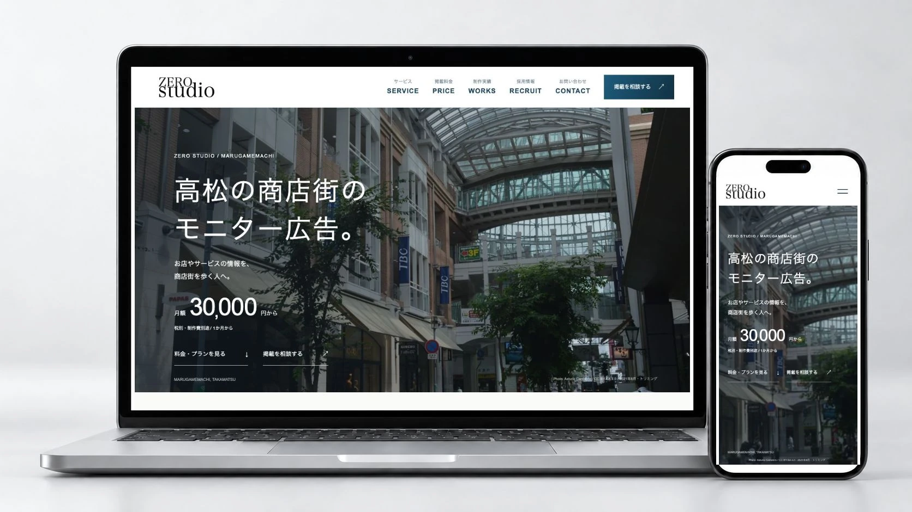
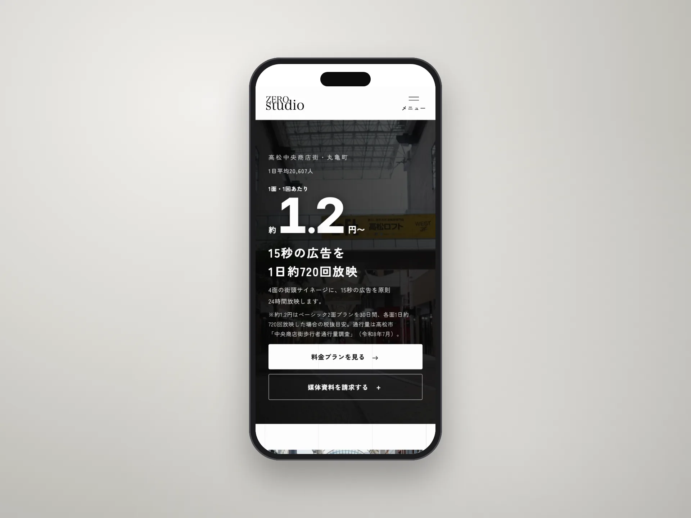

Webサイト / 2026年
ZERO Studio 公式サイト
広告制作と街頭サイネージの広告枠販売を行うZERO Studioの公式サイトです。
オーナーの依頼で新規制作し、広告主の募集を目的にリニューアルしました。

概要
ZERO Studioは高松市の丸亀町商店街で広告制作とモニター広告の枠販売を行っています。公式サイトもドメインもない状態から制作を始め、2026年8月に公開しました。今回のリニューアルでは広告掲載を検討する店舗・企業に向けて、設置場所や掲載条件を確認して相談できる構成に見直しました。
- 担当
- 要件定義・構成・文章・制作の指示と確認
- 制作ツール
- Claude Code / Codex
- 公開状況
- 公開中
担当した仕事
オーナーと掲載する内容を決め、ページの構成と文章を作りました。コードの作成はClaude CodeとCodexに任せ、私は画面を確認して修正点を指示し、公開まで進めました。
主な判断
- 広告主を最初の読み手にする
- 当初は求人を最優先にしていましたが、サイトの目的を見直して広告主の募集を中心にしました。トップページでは商店街の写真やモニターの設置場所を見せ、掲載料金や相談先へ進める構成にしています。
- 掲載条件を比較できるようにする
- 問い合わせる前に費用と掲載内容を検討できるよう、4つのプランの料金・画面の向き・面数・放映回数を掲載しました。広告素材の制作費は別途かかることも明記し、各プランから掲載相談へ進めるようにしています。
- 広告の相談と採用の応募を分ける
- 広告を出したい人と働きたい人では必要な情報が異なるため、掲載相談と採用応募のフォームを分けました。広告主には掲載条件や放映までの流れを、応募者には仕事内容・募集要項・選考の流れを案内しています。
スマートフォン版
スマートフォンでも掲載料金や相談先を確認できるようにしています。

公開状況
2026年8月の初回公開後、広告主の募集を中心にサイト全体を見直し、2026年10月にリニューアル公開しました。
制作情報
- 制作期間
- 2026年7月〜8月（初回公開）/ 2026年10月（リニューアル公開）
- 使用技術
- HTML / CSS / JavaScript
Cloudflare Pages - 制作ツール
- Claude Code / Codex
- 画面内の商店街写真
- Asturio Cantabrio / CC BY-SA 4.0（サイト内でトリミング）
- 公開サイト
- zerostudio-takamatsu.com